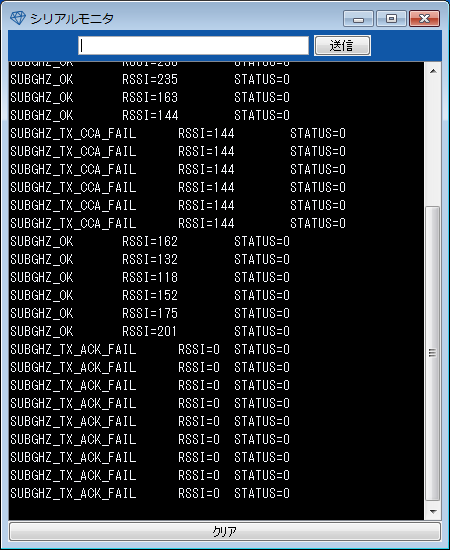

void timer2.stop()
SubGHz関連の関数の戻り値をステータスの文字列に変更する関数です。 本関数を実行する前に、Serial.begin()関数によりシリアル出力を有効にしておく必要があります。
各メッセージの意味はSUBGHZ_MSGを参照してください。
SubGHz関数が戻す値を入力してください。
なし
次のようにシリアルモニター上に920MHz受信結果が表示されます。

サンプルプログラム
サンプルプログラム Welcome_SubGHz.cで使用しています。
#include "Welcome_SubGHz_ide.h" // Additional Header /* FILE NAME: Welcome_SubGHz.c * The MIT License (MIT) * * Copyright (c) 2015 Lapis Semiconductor Co.,Ltd. * All rights reserved. * * Permission is hereby granted, free of charge, to any person obtaining a copy * of this software and associated documentation files (the "Software"), to deal * in the Software without restriction, including without limitation the rights * to use, copy, modify, merge, publish, distribute, sublicense, and/or sell * copies of the Software, and to permit persons to whom the Software is * furnished to do so, subject to the following conditions: * * The above copyright notice and this permission notice shall be included in * all copies or substantial portions of the Software. * * THE SOFTWARE IS PROVIDED "AS IS", WITHOUT WARRANTY OF ANY KIND, EXPRESS OR * IMPLIED, INCLUDING BUT NOT LIMITED TO THE WARRANTIES OF MERCHANTABILITY, * FITNESS FOR A PARTICULAR PURPOSE AND NONINFRINGEMENT. IN NO EVENT SHALL THE * AUTHORS OR COPYRIGHT HOLDERS BE LIABLE FOR ANY CLAIM, DAMAGES OR OTHER * LIABILITY, WHETHER IN AN ACTION OF CONTRACT, TORT OR OTHERWISE, ARISING FROM, * OUT OF OR IN CONNECTION WITH THE SOFTWARE OR THE USE OR OTHER DEALINGS IN * THE SOFTWARE. */ #define LED 26 // pin number of Blue LED #define SUBGHZ_CH 36 // channel number (frequency) #define SUBGHZ_PANID 0xABCD // panid #define HOST_ADDRESS 0x5f8f // distination address unsigned char send_data[] = {"Welcome to Lazurite Sub-GHz\r\n"}; void setup(void) { SubGHz.init(); // initializing Sub-GHz Serial.begin(115200); pinMode(LED,OUTPUT); // setting of LED digitalWrite(LED,HIGH); // setting of LED } void loop(void) { SUBGHZ_MSG msg; // Initializing SubGHz.begin(SUBGHZ_CH, SUBGHZ_PANID, SUBGHZ_100KBPS, SUBGHZ_PWR_20MW); // start Sub-GHz // preparing data digitalWrite(LED,LOW); // LED ON msg=SubGHz.send(SUBGHZ_PANID, HOST_ADDRESS, &send_data, sizeof(send_data),NULL);// send data digitalWrite(LED,HIGH); // LED off SubGHz.msgOut(msg); // close SubGHz.close(); // Sub-GHz module sets into power down mode. sleep(2000); // sleep return; }